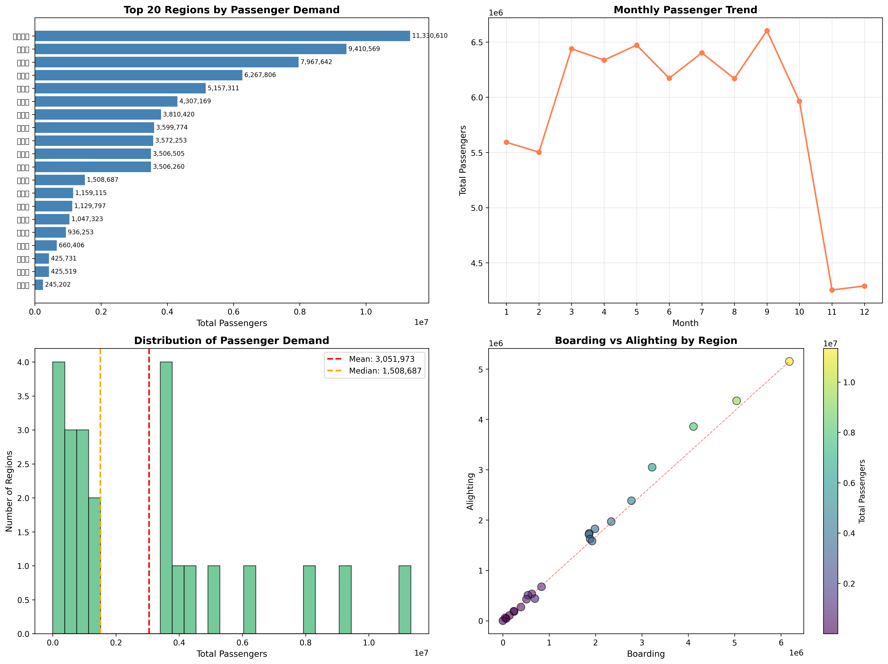
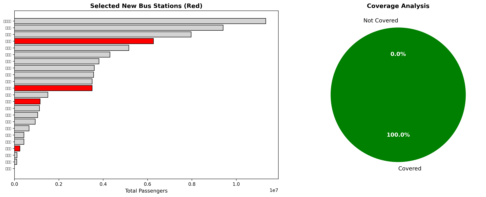
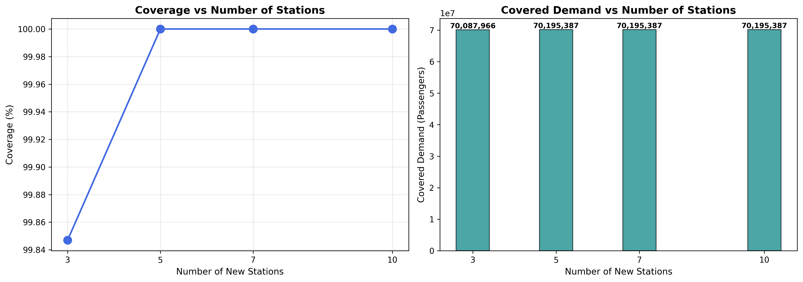
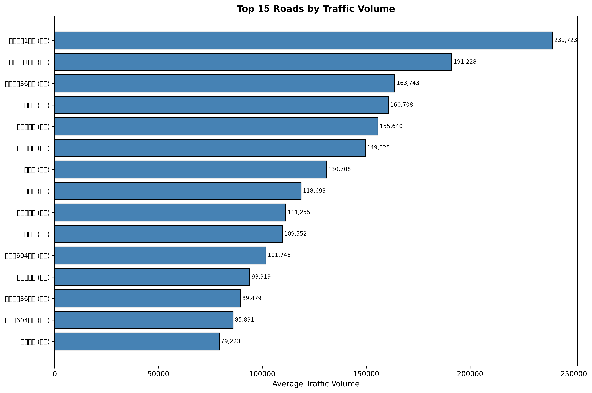

🚌 버스 정류장 최적화 분석 리포트
분석 날짜: 2023년 데이터 기준
📊 주요 지표
총 분석 지역
23
총 이용객
70,195,387
권장 신규 정류장
4
커버리지
100.0%
🎯 최적화 결과
✅ 권장 신규 버스 정류장 위치
| 순위 | 지역명 | 총 이용객 | 승차 | 하차 | 환승 |
|---|---|---|---|---|---|
| 1 | 한솔동 | 6,267,806 | 3,220,295 | 3,047,511 | 480,049 |
| 2 | 나성동 | 3,506,260 | 1,924,198 | 1,582,062 | 258,373 |
| 3 | 보람동 | 1,159,115 | 625,666 | 533,449 | 88,197 |
| 4 | 연동면 | 245,202 | 141,274 | 103,928 | 6,120 |
📈 탐색적 데이터 분석 (EDA)
상위 수요 지역과 월별 추이, 수요 분포, 승하차 관계를 분석한 결과입니다.
🎯 최적화 모델 결과
선형계획법(IP)을 활용하여 선정된 신규 정류장 위치와 커버리지 분석 결과입니다.
🔍 시나리오 분석
신규 정류장 수에 따른 커버리지 변화를 분석한 결과입니다.
🗺️ 지도 시각화
⚠️ 참고: 지도의 좌표는 실제 GPS 데이터가 없어 시뮬레이션된 값입니다.
실제 운영시에는 정확한 GPS 좌표를 사용해야 합니다.
🚗 교통량 분석
⚡ 속도 분석

💡 결론 및 권장사항
주요 발견사항
- 총 23개 지역 중 상위 30개 지역을 분석 대상으로 선정
- 4개의 신규 정류장 설치로 100.0%의 수요 커버 가능
- 선정된 지역들은 높은 승하차 수요와 환승 수요를 보이는 핵심 거점
권장사항
- 단계적 구축: 수요가 가장 높은 상위 3개 지역부터 우선 설치
- 인프라 연계: 교통량이 많은 도로와 연계하여 접근성 향상
- 환승 최적화: 환승 수요가 높은 지역에 환승센터 구축 고려
- 모니터링: 설치 후 이용 패턴 모니터링을 통한 추가 최적화
📋 방법론
최적화 모델 상세
- 모델 유형: Integer Programming (IP) - Facility Location Problem
- 목적 함수: 커버되는 총 수요(이용객 수) 최대화
- 주요 제약: 최대 설치 가능 정류장 수, 커버리지 반경
- 솔버: PuLP + CBC Solver
- 커버리지 정의: 정류장으로부터 3개 지역 이내
본 분석은 2023년 교통 데이터를 기반으로 수행되었습니다.
실제 운영 시에는 최신 데이터와 추가적인 요인들을 고려해야 합니다.